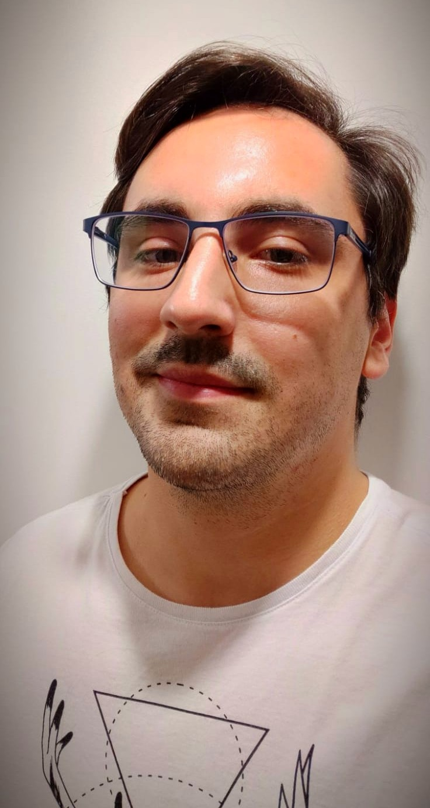

Vinicius Guilherme Guazelli Savordelli
ABOUT ME
MY SKILLS
CONTACT INFO
WORK EXPERIENCE
LINKEDIN

Coming From a Life as an Entrepreneur, and a Bachelor in Economics, Now I Aim to Become a Developer.
About me
I've always been the shy kid with great logical and analytical skills, but as a teen I ran from IT and joined a Business Management tech shool. From there I followed an administrative path. Gladly I realized this was not the path for me, and I can tell that I love solving problems and I love everything I've seen in my path into becoming a Dev so far, specially when it comes to backend languages.
Today my Goal is to become a Data Scientist, but as a complete beginner in this world, I thought it would be wise to start my new path through Web Development.
My Skills
- Fluent Portuguese
- Advanced English
- Microsoft Office: Advanced
- Great Problem Solving Capabilities
- Basic HTML
- Basic CSS
- Basic VBA
- Basic Javascypt
- Git
Work Experience
- Lava & Lavanda - Industrial Laundry Shop: Co-Founder - SalesPerson - Administrator - August 2019 - Present
- Barroco Cocktail Bar: Co-Founder & Administrator - From April 2017 - August 2019
- Supra Bar Figueiras: Co-Founder & Administrator - from May 2015 - Jul 2016
- Hewlett Packard: Global Sales Enablement Intern - Sales report and Business Case models were some of my responsibilities from August 2013 - December 2020
Address: Rua Casper Libero,639 - Apt 45 mare - São Bernardo do Campo, SP - Brazil
Phone: +55 (11) 98848-9449
Email: Vinicius.savordelli@gmail.com
My Social Media
LinkedIN
Instagram
Facebook
Github